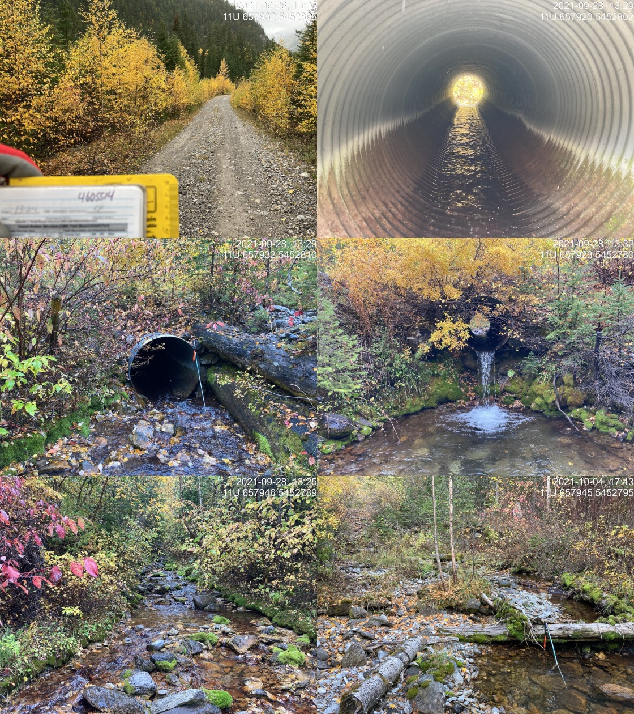

Appendix - 197844 - Tributary to Bighorn Creek
Site Location
PSCIS crossing 197844 is located on a tributary to Bighorn Creek on the Cabin FSR. The site is located approximately 11km west of the junction with the Wigwam FSR at a point approximately 30k south of Morrissey. Cabin FSR(forest file ID 5466) is ultimately the responsibility of Ministry of Forests, Lands, Natural Resource Operations and Rural Development - Rocky Mountain Forest District. Although unconfirmed, Canfor may have a road use permit for this section of FSR.
Background
At crossing 197844, tributary to Bighorn Creek is a fourth order stream with a watershed area upstream of the crossing of approximately 13.5km2. The elevation of the east facing watershed ranges from a maximum of 2585m to 1316m at the crossing (Table 5.28). Upstream of Cabin FSR, no fish have previously been recorded (MoE 2020b). Downstream, Bighorn Creek supports westslope cutthroat trout, bull trout and mountain whitefish (MoE 2020b). Bighorn Creek has been noted as contributing significantly to habitat suitable for bull trout spawning in the Wigwam River system with spawning been noted just upstream of the confluence with the Wigwam River. The Wigwam River has been characterized as the most important spawning system in the East Kootenay region, supporting some of the largest westslope cutthrout trout in the Kootenay Region and is located ~11.5km downstream of the subject culvert (Strong and K. D. 2015; R. S. Cope and Morris 2001). Strong and K. D. (2015) report that substrate core samples have been taken within Bighorn Creek at an index site ~700m upstream of the confluence with the Wigwam River between 2003 - 2008 and again in 2015 with an objective of analyzing stream substrate material/sediment levels to produce trend data valuable in monitoring suitability of stream reaches identified as critical for bull trout spawning.
fpr_tab_wshd_sum(site_id = my_site) %>%
my_kable(caption_text = paste0('Summary of derived upstream watershed statistics for PSCIS crossing ', my_site, '.'),
footnote_text = 'Elev P60 = Elevation at which 60% of the watershed area is above')| Site | Area Km | Elev Site | Elev Min | Elev Max | Elev Mean | Elev Median | Elev P60 |
|---|---|---|---|---|---|---|---|
| 197844 | 13.5 | 1316 | 1305 | 2585 | 1959 | 1976 | 1927 |
| * Elev P60 = Elevation at which 60% of the watershed area is above |
PSCIS crossing 197844 was surveyed with a phase 1 assessment opportunistically during field assessments in the area and was prioritized for follow up with a habitat confirmation as it was considered the crossing with the highest potential for remediation located within the Bighorn Creek watershed area. The site was noted as having a significantly sized outlet drop and good flow with a location very close to the mainstem of Bighorn Creek which contains confirmed spawning habitat for westslope cutthrout trout. Table 5.15 presents preliminary fish passage modelling data for crossing 197844 with linear length of spawning and rearing habitat estimated for westslope cutthrout trout at 0.1km and 0.3km respectively.. Additionally, 0.6km of habitat <8% gradient was modelled as located upstream. A map of the watershed is provided in map attachment 082G.108.
print_tab_summary_bcfp()| Habitat | Potential | Remediation Gain | Remediation Gain (%) |
|---|---|---|---|
| WCT Spawning (km) | 0.1 | 0.1 | 100 |
| WCT Rearing (km) | 0.3 | 0.3 | 100 |
| WCT Stream (km) | 3.1 | 3.0 | 97 |
| WCT Network (km) | 3.1 | 3.0 | 97 |
| WCT Lake Reservoir (ha) | – | 0.0 | – |
| WCT Wetland (ha) | – | 0.0 | – |
| WCT Slopeclass03 Waterbodies (km) | 0.0 | 0.0 | – |
| WCT Slopeclass03 (km) | 0.0 | 0.0 | – |
| WCT Slopeclass05 (km) | 0.1 | 0.1 | 100 |
| WCT Slopeclass08 (km) | 0.5 | 0.5 | 100 |
| WCT Slopeclass15 (km) | 2.3 | 2.3 | 100 |
| WCT Slopeclass22 (km) | 0.2 | 0.1 | 50 |
| * Model data is preliminary and subject to adjustments. | |||
| † Modelled rearing habitat estimates do not currently include linear lengths of centrelines within lakes and wetlands. |
Stream Characteristics at Crossing
At the time of the survey, the culvert under Cabin FSR was un-embedded, non-backwatered and ranked as a barrier to upstream fish passage according to the provincial protocol (MoE 2011b). The pipe was 1.2m in diameter with lengths of 12m, a culvert slope of 5%, a stream width ratio of 1.8 and an outlet drop of 1.2m (Table 5.30). Water temperature was 6\(^\circ\)C, pH was 8.5 and conductivity was 273uS/cm.
##this is useful to get some comments for the report
hab_site %>% filter(site == my_site & location == 'us') %>% pull(comments)
my_priority <- my_priority_info()Stream Characteristics Downstream
The stream was surveyed downstream from the culvert for 95m to the confluence with Bighorn Creek (Figures 5.33 - 5.34). Total cover amount was rated as moderate with overhanging vegetation dominant. Cover was also present as boulders (Table 5.31). The average channel width was 3.1m and the average gradient was 7.3%. The dominant substrate was cobbles with gravels subdominant. The stream was noted as going subsurface at ~40m downstream of the road then rewatering at ~80m downstream. There was evidence of high velocity/volume flows with a general lack of complexity. The habitat was rated as medium value for salmonid rearing and spawning due to dewatering, as well as a lack of deep pool and undercut bank cover.
Stream Characteristics Upstream
The stream was surveyed upstream from 197844 for approximately 840m to the location of a 1.1m high rock that likely presents a barrier to upstream fish passage (Figures 5.35 - 5.36). A ford (PSCIS 197801) was located on a spur road located upstream approximately 220m upstream of the FSR. Within the area surveyed, total cover amount was rated as moderate with deep pools dominant. Cover was also present as small woody debris, large woody debris, boulders, and undercut banks (Table 5.31). The average channel width was 3.3m, the average wetted width was 2.7m and the average gradient was 8.7%. The dominant substrate was gravels with cobbles subdominant. Occasional pools suitable for juvenile westslope cutthroat trout overwintering and frequent pockets of gravel present suitable for spawning were noted throughout. The fairly steep system had good flow with intermittent small woody debris drops between 0.5 and 1m in height. Habitat value was rated as medium with moderate potential for juvenile salmonid rearing.
Structure Remediation and Cost Estimate
Should restoration/maintenance activities proceed at the site, replacement of PSCIS crossing 197844 with a bridge (12m span) is recommended. The cost of the work is estimated at $240,000 for a cost benefit of 3.5 linear m/$1000 and 11.6m2/$1000.
Conclusion
There was 0.8km of steep but viable juvenile rearing habitat surveyed upstream of crossing 197844 before a 1.1m high rock drop considered to likely represent the upstream limit of fish migration. Habitat in the area surveyed was rated as medium value for salmonid rearing with frequent pockets of gravel suitable for spawning. Although Canfor may have a road use permit for this section of FSR, Cabin FSR is detailed as the responsibility of Ministry of Forests, Lands, Natural Resource Operations and Rural Development - Rocky Mountain Forest District (FLNRORD 2020c). Crossing 197844 was ranked as a moderate priority for proceeding to design for replacement.
print_tab_summary()| Location and Stream Data |
|
Crossing Characteristics | – |
|---|---|---|---|
| Date | 2021-09-28 | Crossing Sub Type | Round Culvert |
| PSCIS ID | 197844 | Diameter (m) | 1.2 |
| External ID | – | Length (m) | 12 |
| Crew | KP | Embedded | No |
| UTM Zone | 11 | Depth Embedded (m) | – |
| Easting | 657919.7 | Resemble Channel | No |
| Northing | 5452802 | Backwatered | No |
| Stream | Tributary to Bighorn Creek | Percent Backwatered | – |
| Road | Cabin FSR | Fill Depth (m) | 1 |
| Road Tenure | FLNR DRM 5466 | Outlet Drop (m) | 1.2 |
| Channel Width (m) | 2.2 | Outlet Pool Depth (m) | 0.93 |
| Stream Slope (%) | 5 | Inlet Drop | No |
| Beaver Activity | No | Slope (%) | 5 |
| Habitat Value | Medium | Valley Fill | Deep Fill |
| Final score | 36 | Barrier Result | Barrier |
| Fix type | Replace with New Open Bottom Structure | Fix Span / Diameter | 12 |
| Photos: From top left clockwise: Road/Site Card, Barrel, Outlet, Downstream, Upstream, Inlet. | |||
| Comments: Cobble substrate and abundant overhanging vegetation. Decent sized stream. 13:24 |
tab_hab_summary %>%
filter(Site == my_site) %>%
# select(-Site) %>%
my_kable(caption_text = paste0('Summary of habitat details for PSCIS crossing ', my_site, '.')) | Site | Location | Length Surveyed (m) | Channel Width (m) | Wetted Width (m) | Pool Depth (m) | Gradient (%) | Total Cover | Habitat Value |
|---|---|---|---|---|---|---|---|---|
| 197844 | Upstream | 840 | 3.3 | 2.7 | 0.5 | 8.7 | moderate | medium |
| 197844 | Downstream | 95 | 3.1 | 2.1 | 0.4 | 7.3 | moderate | medium |
my_photo1 = pull_photo_by_str(str_to_pull = '_d1_')
my_caption1 = paste0('Habitat downstream of crossing ', my_site, '.')grid::grid.raster(get_img(photo = my_photo1))Figure 5.33: Habitat downstream of crossing 197844.
my_photo2 = pull_photo_by_str(str_to_pull = '_d2_')
my_caption2 = paste0('Habitat downstream of crossing ', my_site, '.')grid::grid.raster(get_img(photo = my_photo2))Figure 5.34: Habitat downstream of crossing 197844.
my_caption <- paste0('Left: ', my_caption1, ' Right: ', my_caption2)
knitr::include_graphics(get_img_path(photo = my_photo1))
knitr::include_graphics("fig/pixel.png")
knitr::include_graphics(get_img_path(photo = my_photo2))my_photo1 = pull_photo_by_str(str_to_pull = '_u1_')
my_caption1 = paste0('Habitat upstream of PSCIS crossing ', my_site, '.')grid::grid.raster(get_img(photo = my_photo1))Figure 5.35: Habitat upstream of PSCIS crossing 197844.
my_photo2 = pull_photo_by_str(str_to_pull = '_u2_')
my_caption2 = paste0('Habitat upstream of PSCIS crossing ', my_site, '.')grid::grid.raster(get_img(photo = my_photo2))Figure 5.36: Habitat upstream of PSCIS crossing 197844.
my_caption <- paste0('Left: ', my_caption1, ' Right: ', my_caption2)
knitr::include_graphics(get_img_path(photo = my_photo1))
knitr::include_graphics("fig/pixel.png")
knitr::include_graphics(get_img_path(photo = my_photo2))